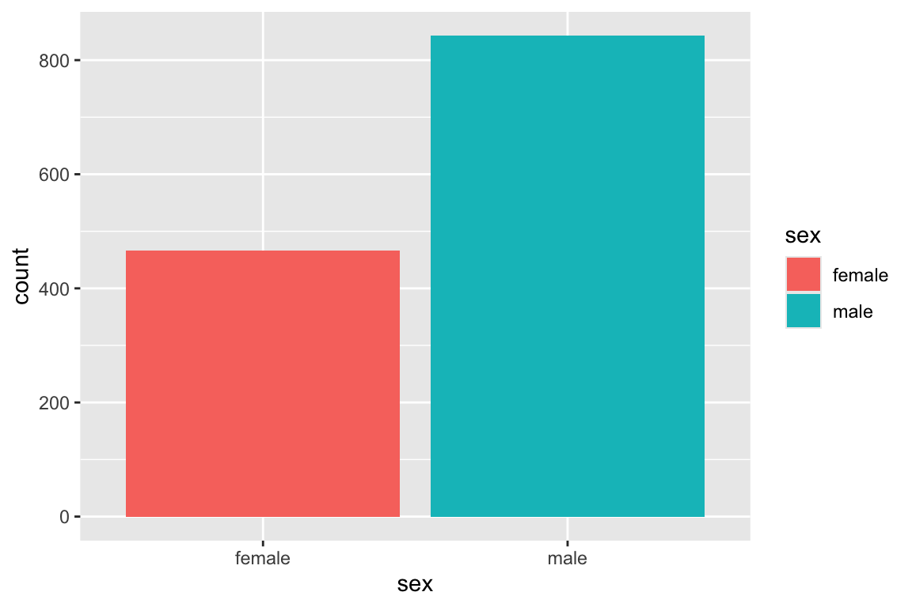
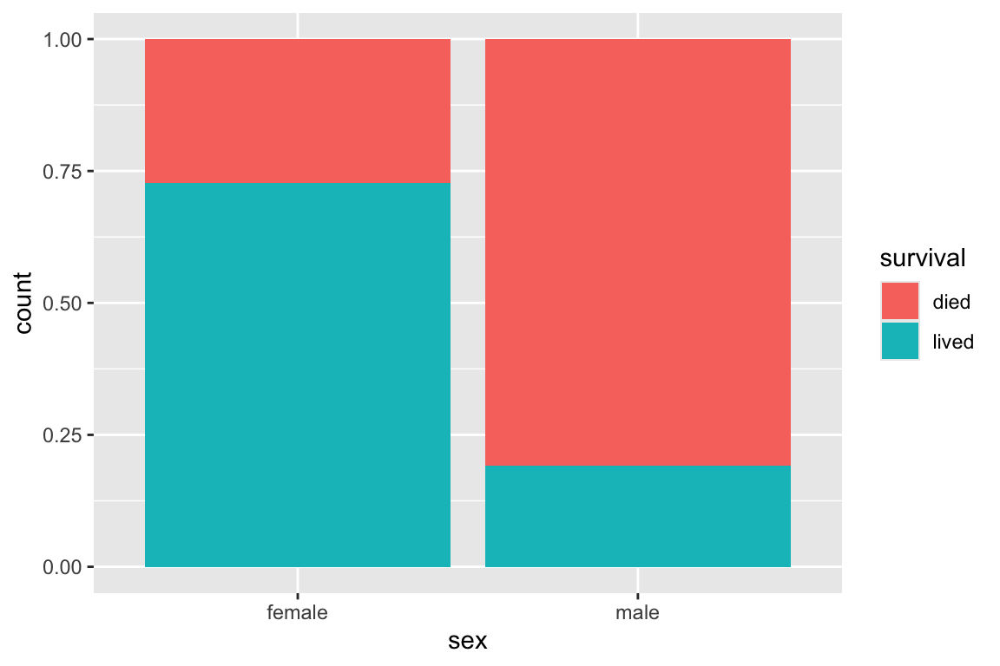
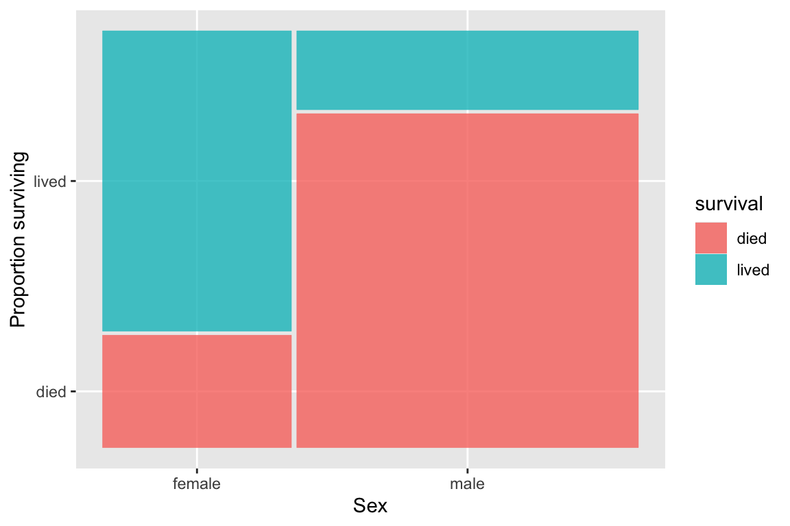
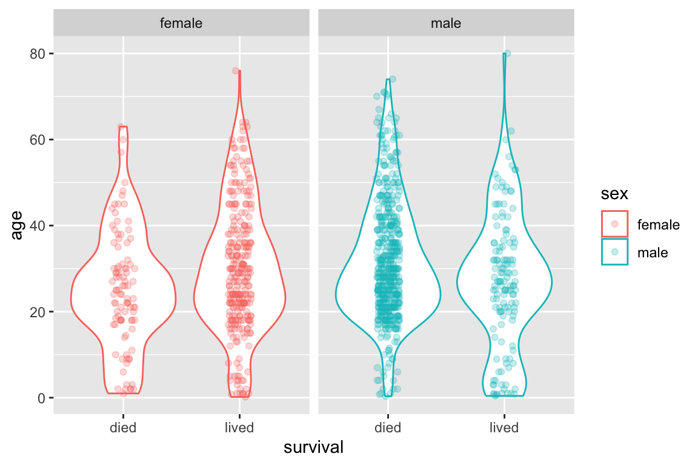
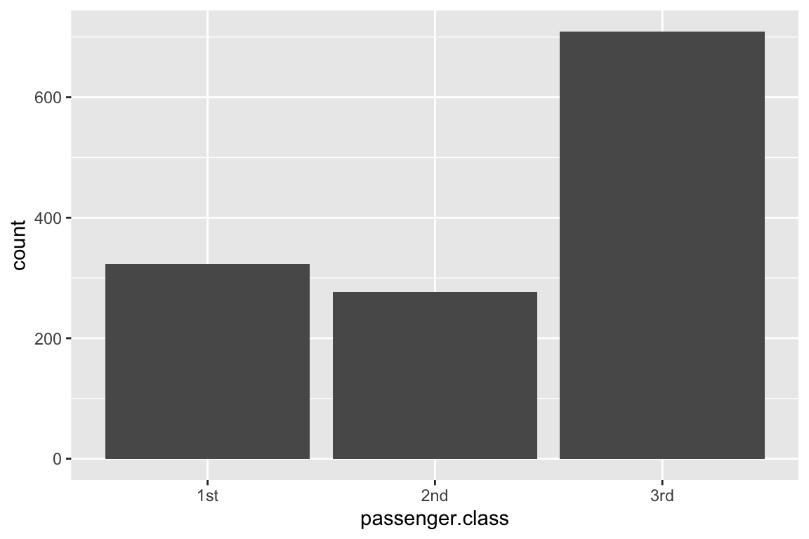
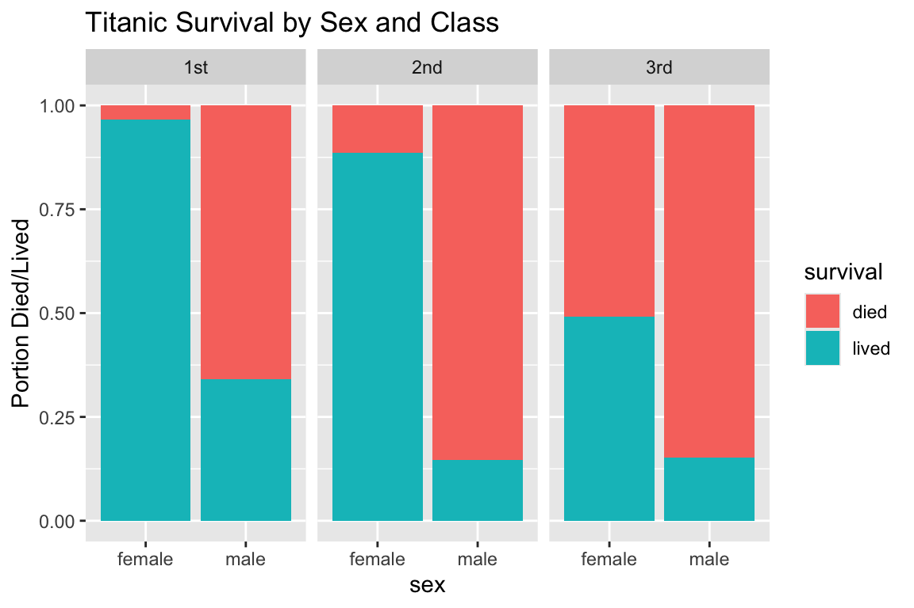

Chapter 2 Data story: Women and children first on the Titanic?
This introductory chapter illustrates some of the tools and concepts you’ll learn in this class, such as visualization, data restructuring, and model building. By the end of this course, you should be able to carry out similar analyses and make well reasoned interpreation of those analyses for a variety of complex biological data.
2.1 Background
On April 10, 1912 the RMS Titanic left Southhampton, England headed for New York. Aboard were 2,435 passengers and 892 crew members. Five days later, about 20 minutes before midnight, the Titanic hit an iceberg in the frigid waters about 375 miles south of New Foundland. Within approximately two and a half hours the ship had split apart and sunk, leaving just over 700 survivors.

The Titanic
2.2 Dataset
The titanic_data.csv file (available on the course git repository) containers information on 1309 passengers from aboard the Titanic (CSV stands for Comma-Separated-Values, a simple plain text format for storing spreadhsheet data). Variables in this data set include gender, age, ticketed class, the passenger’s destitation, whether they survived, etc. We’ll use this data set to explore some of the demographics of the passengers who were aboard the ship, and how their relationship to whether a passenger survived or not. For a detailed description of this data set, see this link.
We’ll use this data to explore whether the saying “Women and children first!” applied on the Titanic.
2.3 Libraries
First we’ll load some R libraries (packages) that contain useful functions that will make our analyses quicker and more efficient. We’ll discuss the functions that these libraries provide, and how to use libraries in general, in greater detail in a future lecture.
2.4 Read data
We start by reading in the data from the CSV file.
titanic <- read_csv("~/Downloads/titanic_data.csv")
#> Parsed with column specification:
#> cols(
#> pclass = col_integer(),
#> survived = col_integer(),
#> name = col_character(),
#> sex = col_character(),
#> age = col_double(),
#> sibsp = col_integer(),
#> parch = col_integer(),
#> ticket = col_character(),
#> fare = col_double(),
#> cabin = col_character(),
#> embarked = col_character(),
#> boat = col_character(),
#> body = col_integer(),
#> home.dest = col_character()
#> )The function read_csv does exactly what it advertises – reads a data set from a CSV file and returns it as an object we can compute on. In this case we assigned the variable name titanic to our data set. Simple enough!
2.5 What’s in the data?
The function read_csv returns a table, where the columns represent the variables of interest (e.g. sex, age, etc) and the rows represent individuals or observations. Let’s take a look:
If we simply wanted the dimensions of the data we could do:
whereas, if we wanted to get a list of the column names in the data we could do:
names(titanic)
#> [1] "pclass" "survived" "name" "sex" "age"
#> [6] "sibsp" "parch" "ticket" "fare" "cabin"
#> [11] "embarked" "boat" "body" "home.dest"2.5.1 Simple data wrangling
Two variables of interest to us are pclass (“passenger class”) and survived. These are categorical variables encoded as numbers. Before exploring the data we’re going to create derived “factor” variables from these, which will make our analyses more convenient. I’m also going to recode the “survived” information as the classes “died” and “lived”.
titanic <- mutate(titanic,
passenger.class = fct_recode(as.factor(pclass),
"1st" = "1", "2nd" = "2", "3rd" = "3"),
survival = fct_recode(as.factor(survived),
"died" = "0", "lived" = "1"))Having added to new variables to our data set, the dimensions and column names have changed:
and
names(titanic)
#> [1] "pclass" "survived" "name"
#> [4] "sex" "age" "sibsp"
#> [7] "parch" "ticket" "fare"
#> [10] "cabin" "embarked" "boat"
#> [13] "body" "home.dest" "passenger.class"
#> [16] "survival"Note that there are now 16 columns in our data, the original 14 plus our two new derived variables passenger.class and survival.
2.6 Categorizing passengers
Let’s start by exploring various aspects of the 1309 passengers in our data set.
First, let’s look at the gender breakdown:
We could also represent this data as a bar graph (though a simple table is more efficient in this case):

Both our table and bar graph tell us that there are almost twice as many men in our data set as women.
2.6.1 How many people survived?
Now let’s look at survival information:
We see that more that in the data we have at hand, roughly 60% (809 of 1309) of the passengers died.
2.6.2 Women first?
We can take our simple explorations a step further, by considering the counts of passengers with respect to multiple variables. Let’s look at the relationship between gender and survival:
2.6.2.1 Contingency tables
When looking at counts of multiple variables simultaneously, a more traditional representation than the one above is a “contingency table”. The cells in a contingency table give the counts of individuals with respect to combinations of variables (e.g. # of women who survived, # of women who died, etc). Here’s the same data on sex and survival represented as a contingency table:
In the code above the symbol %>% can be read as “pipe” or “send”. The pipe operator inserts the object before the pipe as the first argument to the function after the pipe. Here we’re piping the output of the count function as the input into the spread function. We’ll see in later lectures that piping objects makes for very powerful workflows when we do more sophisticated analyses.
We can also create a bar plot to represent the contingency table:

Here we’re already starting to see an interesting pattern – there were nearly twice as many men on the Titanic as women, but proportionally and in absolute numbers more women survived.
2.6.3 A bar plot using proportions rather than counts
Sometimes it’s useful to look at proportions rather than absolute numbers. Here’s a figure that allows us to visually assess the different proportions of men and women passengers who survived:

2.6.4 Mosaic plots
A slightly more sophisticated version of a bar plot is called a “mosaic plot”. A mosaic plot is similar to a proportional bar plot but the width of the bars also varies, indicating the relative numbers of observations in each class. To create a mosaic plot we need to import the geom_mosaic function from a library called ggmosaic.
library(ggmosaic)
ggplot(titanic) +
geom_mosaic(aes(x = product(sex), fill = survival)) +
labs(x = "Sex", y = "Proportion surviving")
As you can see, the mosaic plot emphasizes both that there were more men than women on the Titanic, as well as the fact that a greater fraction of women survived. This seems like strong evidence for the first part of the phrase “Women and children first”.
2.7 Passenger ages
Now let’s create a visualiztion to get a handle on the ages of passengers on the Titanic. A histogram is a common way to visualize the distribution of a continuous variable. Creating a histogram is a simple modification of our earlier examples where we created bar plots.

The histogram provides a quick visual representation of the frequency of different age groups. It appears that the the most common (modal) value of age is a little over 20 years old. We can explicitly calculate the mean and median age as follows:
Note that we have to explicitly tell the mean and median functions to drop any missing (NA) values. Alternately, we could have use pipes to calculate the mean and median as so:
2.8 How does age relate to survival?
Now we turn to the question of how age relates to the probability of survival. Age is a continuous variable, while survival is a binary variable.
2.8.1 Strip charts
We’ll start by creating “strip charts” that plot age on the y-axis, and survival on the x-axis. First we filter out individuals for which we have no age data, then we use a pipe to send the filtered data to the ggplot function:
titanic %>%
filter(!is.na(age)) %>%
ggplot() +
geom_jitter(aes(survival, age), width = 0.1, alpha = 0.5) 
Recall that sex was an important variable in our earlier assessment of the data. Let’s create a second strip plot that takes into account both age and sex.
titanic %>%
filter(!is.na(age)) %>%
ggplot() +
geom_jitter(aes(survival, age, color = sex), width = 0.1, alpha = 0.5) +
facet_wrap(~sex)
2.8.2 Box plots
Another way to look at the data is to use a summary figure called a “box plot”. First the simple boxplot, relating age and survival:

A box plot depicts information about the median value (thick central line), the first and third quartiles (lower 25% value, upper 75% value) and outliers. From this simple boxplot, it doesn’t look like there is a great difference in the age distribution of passengers who lived vs died.
Now we look at box plott for age-by-survival, conditioned on sex.
titanic %>%
filter(!is.na(age)) %>%
ggplot() +
geom_boxplot(aes(survival, age, fill = sex)) +
facet_wrap(~sex)
Here we start to see a more interesting pattern. When comparing male passengers, the median age of survivors appears to be a little younger than those who died. However, when comparing female passengers the opposite pattern seems to be at play.
2.8.3 Fitting a model relating survival to age and sex
We can get more sophisticated by fitting a formal model to our data. Here we use a technique called logistic regression to model the probability of survival as a function of age, broken down for female and male passengers separately.
titanic %>%
filter(!is.na(age)) %>%
ggplot(aes(x = age, y = survived, color = sex)) +
geom_jitter(height = 0.05, alpha = 0.35) +
geom_smooth(method="glm", method.args = list(family="binomial")) +
facet_wrap(~sex) +
labs(x = "Age", y = "Probability of survival")
The logistic regression model fit here, seems to support the trend we saw in the box plots. When breaking the data down by sex we find that there is a decreasing probability of survival as age increases for male passengers, but the opposite trend for female passengers. This is pretty interesting – “children first” seemed to hold for men but not for women.
2.9 How does class affect survival?
A passenger’s ticket class (a proxy for socioeconomic status) is another interesting variable to consider in conjunction with sex and survival.
First, let’s consider class on its own.
And as a bar graph:

Both our table and bar graph tell us that the largest number of passengers (in the available data) were travelling on third-class tickets. The numbers of first- and second-class ticketed passengers are fairly similar.
2.9.1 Combining Sex and Class
Here is a bar plot that takes into account sex, class, and survival by representing passenger class as a “facet” variable – we create different subplots for each class grouping.
ggplot(titanic) +
geom_bar(aes(sex, fill = survival), position = "fill") +
facet_wrap(~ passenger.class) +
labs(y = "Portion Died/Lived", title = "Titanic Survival by Sex and Class")
2.9.2 Extending the logistic regression model to consider class, age, sex, and survival
As a final example, let generate a visualization and model to jointly consider how sex, age, and class affected survival on the Titanic. Here we treat both sex and passenger class as faceting variables, fitting six different logistic regression models (all combinations of the three classes and two sexes).
titanic %>%
filter(!is.na(age)) %>%
ggplot(aes(x = age, y = survived, color = sex)) +
geom_jitter(height = 0.05, alpha = 0.35) +
geom_smooth(method="glm", method.args = list(family="binomial")) +
facet_grid(passenger.class~sex) +
labs(x = "Age", y = "Probability of survival")
By conditioning on both sex and ticketing class, we gain even more insights into the data and our assesments of relationships between variables can change.
For female passengers, ticketed class appears to have a strong influence on the relationship between age and survival. We see that almost all of the female first-class passengers survived, and the relationship between age and survival is thus flat. The second class female passengers are fairly similar, though with a slight decrease in the probability of survival among the oldest passengers. It’s not until we get to the third class passengers that we see a strong indication of the “children first” relationship playing out in terms of survival.
For the male passengers, the “children first” model seems to fit across classes, but note the generally lower probability of survival across ages when comparing first and third class passengers.
2.10 Conclusion
We’ve only scratched the surface of the possible explorations we could undertake of this intersting data set. However, this introductory “data story” illustrates many of the tools and ideas we’ll encounter in this class. You’ll be undertaking even more complex data explorations on your own by the end of the semester!